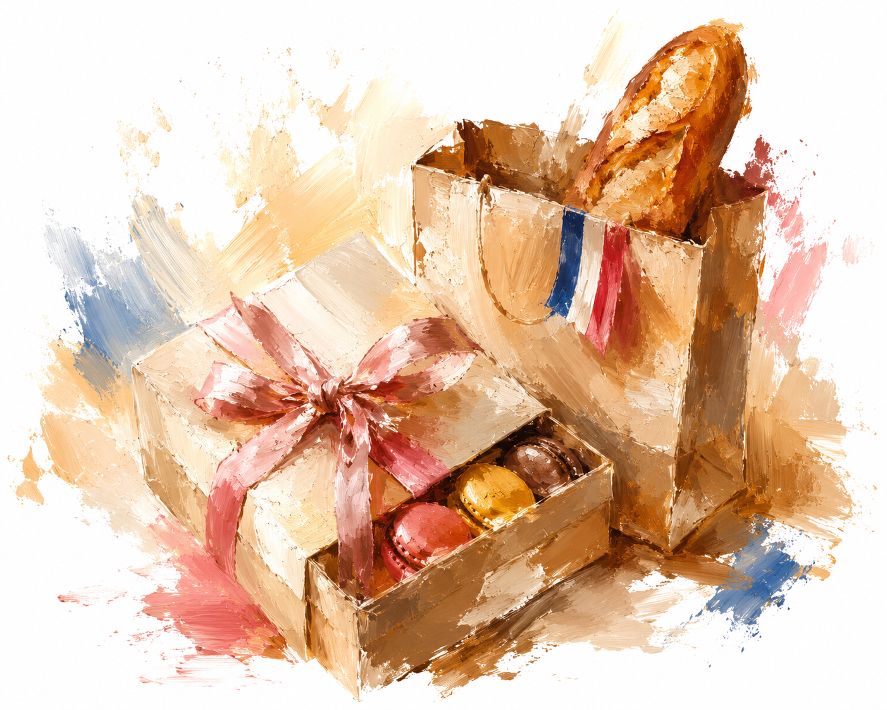

パリ土産に迷ったら。さすけと先輩カップルのおすすめです。あわせて、選び方の考え方と食品持ち込みの注意点もまとめました。

相手・目的で選ぶ考え方
職場等への大人数のばらまき用は、個包装で日持ちする焼き菓子(マドレーヌ・サブレ・ビスケット等)が定番で、スーパーやチェーン系パン屋でも10€前後から買えます。家族・恋人向けは、専門店やデパート系(お土産カテゴリの各ページ参照)で少し値の張るチョコレート・紅茶・雑貨を選ぶと特別感が出ます。自分用には、割れ物・日持ちしないものも含めて選択肢を広げられます(持ち帰りの梱包は購入時に相談を)。
価格帯の目安
10€以下: スーパーのチョコレート・ビスケット、絵葉書、小さな雑貨。20€以下: 専門店の焼き菓子詰め合わせ、香り物の小サイズ。50€以下: 紅茶・チョコレートの上質な詰め合わせ、香水のミニボトルなど。各カテゴリページ(お土産・スイーツ)のおすすめ店を参考にしてください。
日本への食品持ち込みの注意点
日本の動物検疫所のルールにより、生ハム・ソーセージ・パテなど肉が主原料の製品は、検査証明書がないと基本的に持ち込めません。個人がこの証明書を用意するのは現実的に不可能なため、肉製品のお土産は避けるのが無難です。チーズ・バター・生クリームなど要冷蔵の乳製品も同様に検査証明書が必要で、実質持ち込みが難しい品目です。
一方、チョコレート・クッキー・キャンディなど常温保存できる焼き菓子・菓子類は、この検疫の対象になりにくく、お土産の定番として選びやすいものです。不安な場合は出発前に動物検疫所の公式サイトで確認するか、最寄りの動物検疫所へ問い合わせてください。
さすけが実際に買って良かった、または気になっているお土産のお店です。
近日公開予定です。
実際にパリで前撮りをした先輩カップルから届いたおすすめです。「投稿する」ページからの投稿を確認のうえ掲載しています。
まだ投稿がありません。「投稿する」からぜひ教えてください。
現在地、またはホテル名・住所を入力すると、近いお土産を距離順に表示します